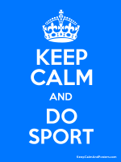

This app is something like sport dictionary. Through the navigation at bottom of your screen you can access our three main pages.
On the Home page we have a list of sports where you can search to get the one you want.
When you find a sport you are interested in you can tap on it to see the details like a format, icon, description and so on.
When you want to have fun you can go to Sport guesser page where is displayed picture of one sport and you have to guess which sport it is.
This page (last section of our navigation) is for you to be able to understand how to interact with our app.
